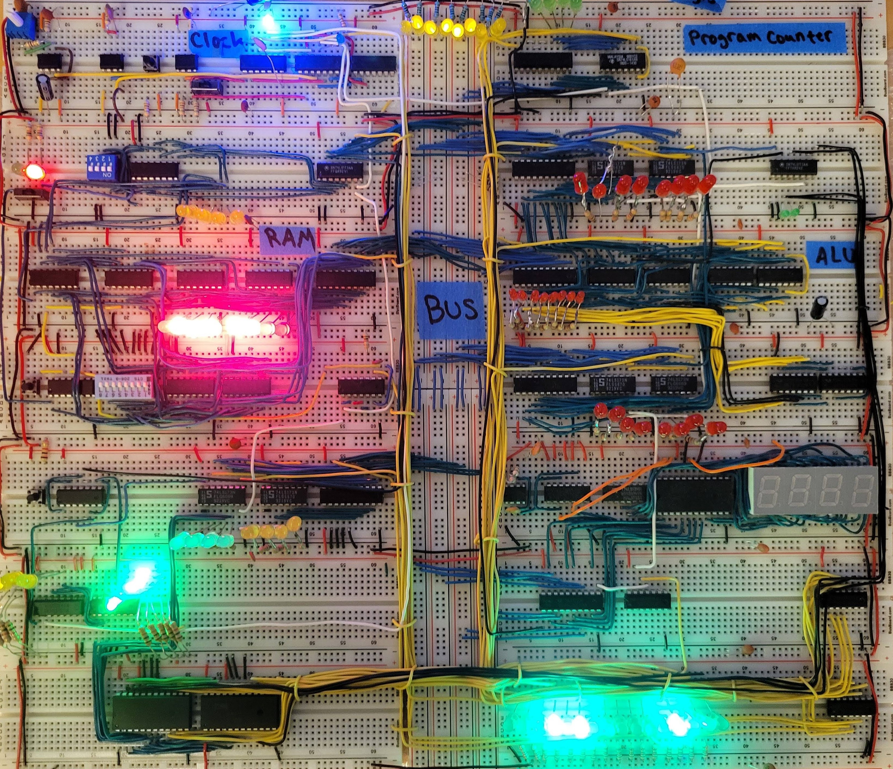
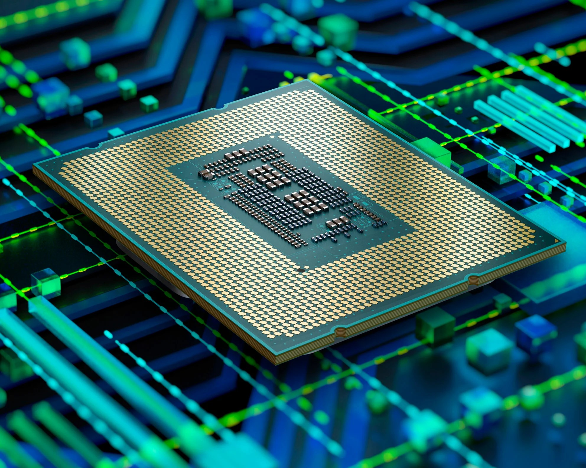

Projects
Here are some of the projects that I have done so far:
- 8-bit breadboard cpu 
- Class project:  Built a program that will execute and run machine code
- This website:
 More information about how this website was created
More information about how this website was created
Here are some of the projects that I have done so far:
More information about how this website was createdHi there, thank you for visiting my portfolio!
Here is a little bit about me:
I am currently a student at NYU Tandon, chasing my career in the computer engineering field.
I'm a passionate software engineer with expertise in low level languages. I enjoy solving complex problems and creating efficient, scalable, and maintainable software solutions.
Feel free to contact me with any questions or inquiries.